Room 17 · Grade 1 · Every Tuesday · September 2026 – May 2027
Little gardeners year
An original first-grade garden curriculum. Eighteen children come in two groups of nine. Each group gets the same 30-minute lesson. The year follows what 6- and 7-year-olds can see, touch, count, and taste in a Bay Area schoolyard.
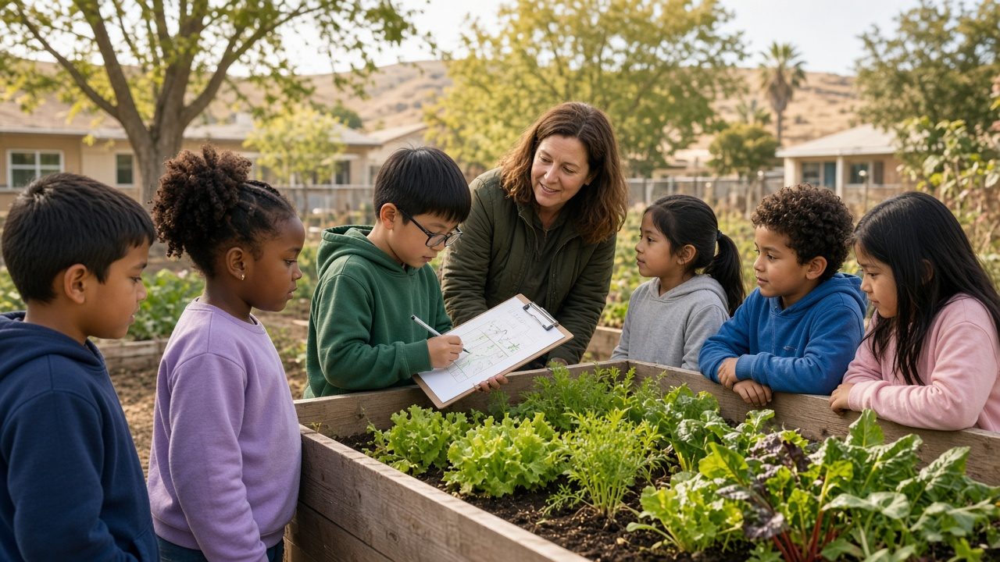
How the hour works. Group A (9 kids) does the lesson. Two-minute reset: rinse trowels, refill cans, restack journals. Group B (9 kids) does the same lesson. Do not split one group across two activities that need the whole bed. Materials below are for one group of 9. Each child still has their own journal for the year.
Why this year is built this way
First graders learn with their hands and their senses. Each week has one question, one outdoor or table job, and three trios (3 + 3 + 3). They need a fast win, so we plant radishes in September and harvest them in December. Cool-season food (lettuce, peas, garlic, carrots) goes in during fall. Warm-season joy (beans, sunflowers, cherry tomatoes) starts in trays in January and goes outside in March. We end by saving seed and leaving the bed kind for next year’s class.
This plan is written for Room 17’s garden, Cupertino-area weather, and CUSD Tuesday dates. It does not follow an old class log. Shift a planting week if the bed is already full or the soil is soaked.
Every Tuesday, both groups
| Clock | Move |
|---|
| Night before | Read that week’s materials. Fill two water buckets. Put 9 journals in a crate (Group A names on top, Group B underneath). |
| 10 min before | Yarn “feet line” on the path. Tools on a blanket. Circle spot ready. |
| 0–4 | Sit on the path. One garden rule. Ask the week’s question. |
| 4–10 | Look: one object or a 20-second bed walk in a single-file line. |
| 10–24 | Do: three trios. Grownup stays at the risky job (tools, water, harvest). |
| 24–30 | Tools down. Count them. Wash hands. One sentence. Line up. |
| Between groups | Reset in 2 minutes. Do not start Group B until 9 trowels / 3 cans are back. |
Garden rules (teach Week 1, repeat one each week): walk on the path; tools point down; ask before picking; kind hands with bugs; water the plant, not the path; we take turns.
Each week now has three teacher supports. A picture to show the class, a 4-minute fun game that fits inside the 30 minutes, and a printable kid sheet (copy 9, then 9 more for Group B). Print one week at a time.
Standing kit
| Item | Qty | Notes |
|---|
| Journals + pencils | 18 | One book per child all year |
| Clipboards | 9 | Reuse for both groups |
| Trowels | 9 | Count before Group B |
| Watering cans | 3 | Keep half full |
| Small cups | 9 | Tray watering |
| Buckets | 3 | Water, weeds, rinse |
| 6- or 9-well seed trays | 6 | Enough for both groups over two weeks |
| Popsicle sticks + marker | 1 box | |
| Yarn + hand-wash jug | 1 each | |
1 Welcome
2 Seeds & soil
3 Leaves & weather
4 Harvest & rest
5 Winter scientists
6 Spring start
7 Grow & share
Unit 1 · We belong here
Week 1 · Hello, garden
Tue Sept 1, 2026
Question: “What can my five senses notice in 30 seconds?”
Use the left picture to teach the four senses we use this week. Taste waits until harvest day.
Materials (group of 9)
| Item | Qty | Ready how |
|---|
| Rule cards | 6 | One picture per rule |
| Senses slips | 9 | Boxes: see, hear, smell, touch (no taste yet) |
| Pencils | 9 | |
30-minute plan
| 0–4 | Names in a circle. “This is Room 17’s garden. You will come every Tuesday.” Show the six rules with bodies: walk, point-down tool, ask, kind hands, water plants, take turns. |
| 4–10 | Silent 30-second listen. Then one child names a sound, a color, a smell. |
| 10–24 | Trios walk the path only. Each child marks one sense on the slip. Grownup stays at the corner so nobody steps in. |
| 24–30 | Share one word. Wash hands. “Group B, same adventure.” |
Fun activity
Simon Says: Garden Rules. Play 4 minutes. Simon says walk the path / freeze / tools point down / kind hands. If Simon does not say, they freeze. Winner starts Group B’s game.
Kid sheet · Senses ticket · copy 9
Print 9. Group B uses a second stack. Clip to the journal after class.
I see
I hear
I smell
I touch
Draw one thing in each box. No tasting yet.
Week 2 · Our map
Tue Sept 8, 2026
Question: “If I closed my eyes, could I find the faucet from my drawing?”
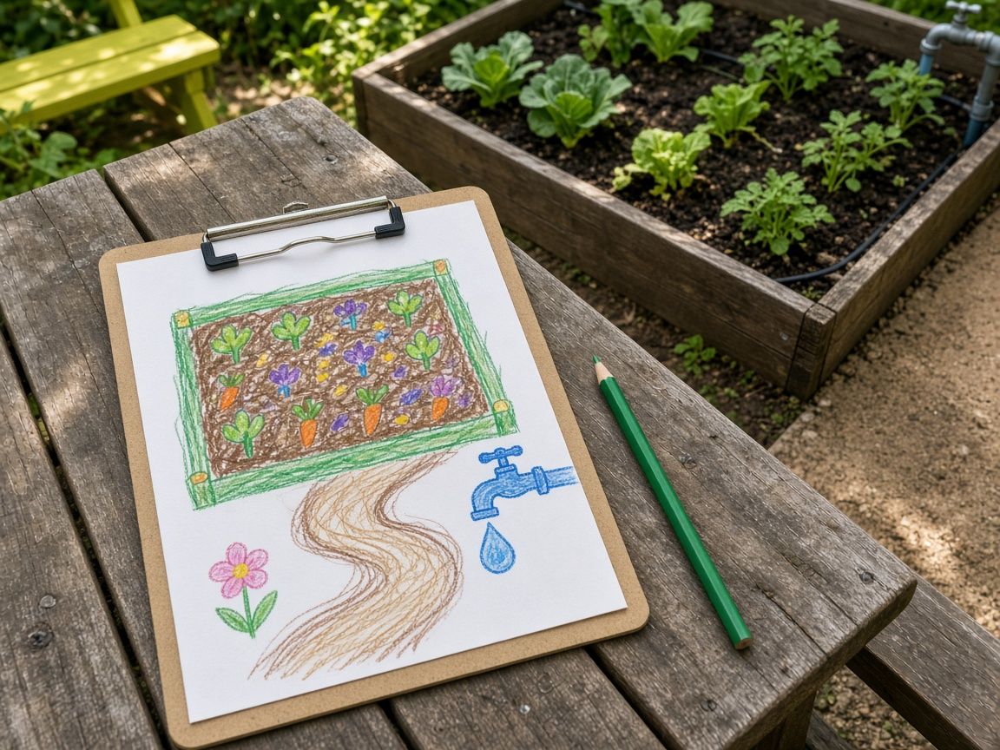
Map 1 only needs three things: bed, path, faucet. Save it for Week 34.
Materials
| Item | Qty | Ready how |
|---|
| Journals | 9 | First page titled Map 1 |
| Clipboards | 9 | |
| Big teacher map on cardboard | 1 | Bed, path, faucet already sketched |
30-minute plan
| 0–4 | Rule: walk on the path. Point to faucet, bed, wall. |
| 4–8 | Teacher draws those three things on the big map. Kids copy the shapes in the air. |
| 8–24 | Each child draws Map 1. Grownup writes words they ask for. No coloring contest — just “where things live.” |
| 24–30 | Collect journals. Wash hands. |
Save: Map 1 for May.
Fun activity
Faucet treasure. Hide a painted stone near the faucet before class. After maps are drawn, one trio at a time follows a classmate’s map to find it. Whisper, no running.
Kid sheet · Map 1 · copy 9
Print 9. Group B uses a second stack. Clip to the journal after class.
Draw: the bed (a rectangle), the path (a line), the faucet (a circle). Label them if you want help.
My garden map
Week 3 · Soil in our hands
Tue Sept 15, 2026
Question: “Is soil just dirt, or is it a home?”
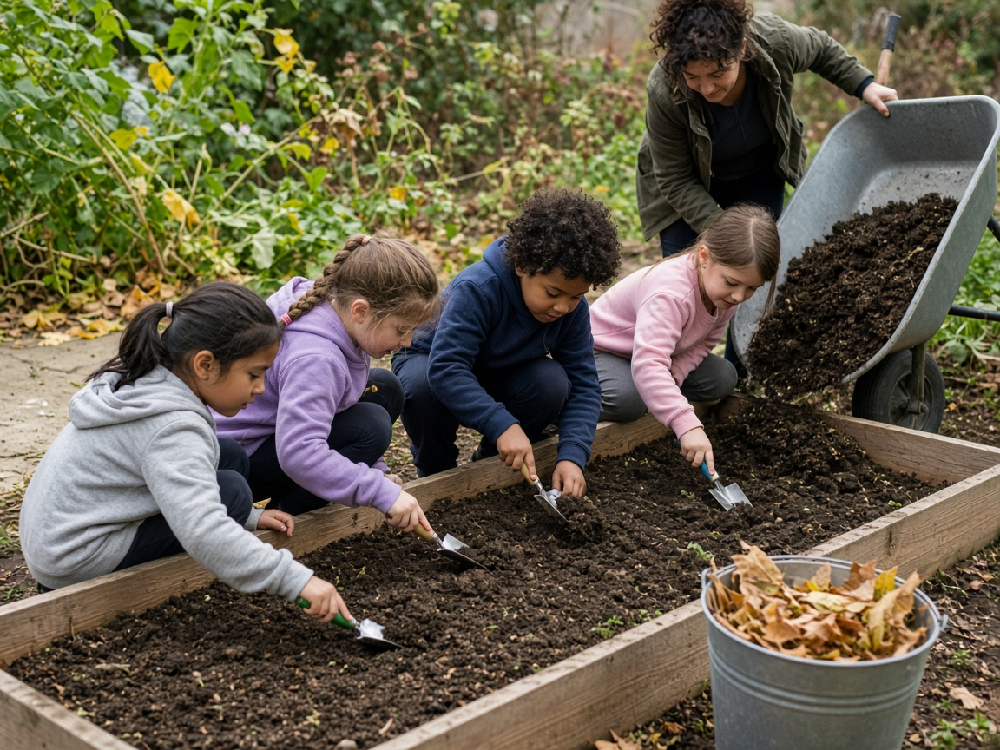
Materials
| Item | Qty | Ready how |
|---|
| Trowels | 9 | On the blanket |
| Weed bucket | 1 | |
| Compost or bagged garden soil | 1 tub | Damp, not dusty |
| Yarn feet-line | 1 | |
30-minute plan
| 0–4 | Rule: tools point down. Demo carry and “trowels sleep on the blanket.” |
| 4–10 | Each trio gets a handful of dry dusty soil and a handful of compost. Which would a seed like? |
| 10–24 | Trio 1 picks leaves/weeds. Trio 2 loosens the top 2 inches. Trio 3 spreads compost. Rotate every 4 minutes. |
| 24–30 | Count 9 trowels. Wash hands. |
Fun activity
Soil bakery. Each trio makes a “soil cake”: dry dust on the bottom, compost on top. Vote which cake a seed would choose. Then spread the winning cake on the bed.
Kid sheet · Dirt or home? · copy 9
Print 9. Group B uses a second stack. Clip to the journal after class.
Dusty dirt feels
Compost feels
Circle the one a seed would like: DIRT COMPOST
Week 4 · Radish and lettuce day · next class
Tue Sept 22, 2026
Question: “How can nine children plant without making a seed pile?”
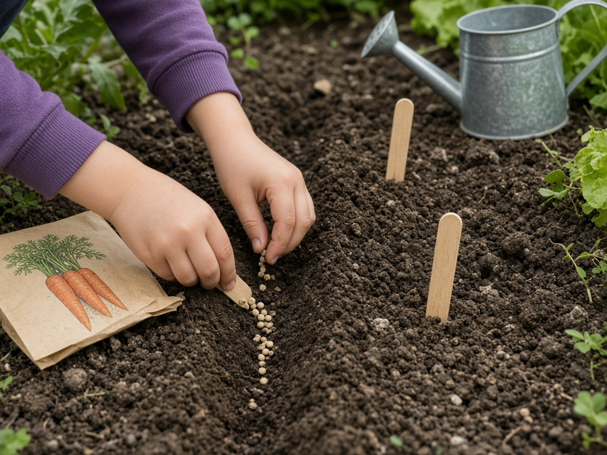
Radish is the first-grade crop: about four weeks to a crunch. Lettuce is the slow friend beside it.
Materials
| Item | Qty | Ready how |
|---|
| Radish seed in 3 small cups | 1 packet | Never hand the whole packet to a child |
| Lettuce seed in 3 small cups | 1 packet | |
| Pre-scratched furrows | 4 | Two radish, two lettuce, fingernail deep |
| Labels | 4 | Written before class |
| Watering cans, half full | 3 | |
| Yarn feet-line | 1 | |
Setup
Scratch the four rows before Group A. Group B uses the same rows — they plant the empty stretches. If Group A finishes a row, Group B waters and pats.
30-minute plan
| 0–4 | Show a radish seed and a lettuce seed. “Three seeds in a palm, not a shake.” |
| 4–8 | Walk the four rows. Read the labels together. |
| 8–22 | Trios take turns: grownup tips 3 seeds into each palm. Child places, does not sprinkle. Next child pats soil. Third child waits on the path. |
| 22–28 | Each trio waters one row for 10 seconds. |
| 28–30 | Count cans. Wash hands. Reset seed cups for Group B. |
Rain: practice placing seeds on wet paper plates, then plant the next dry Tuesday.
Fun activity
Seed-seed-ROW. Like duck-duck-goose on the path only. Tap heads “seed, seed…” then “ROW!” That child walks to the next empty furrow. Keeps turns fair for 9 kids.
Kid sheet · Planter job cards · copy 3 sets
Print 9. Group B uses a second stack. Clip to the journal after class.
1 Place 3 seeds
2 Pat the soil
3 Wait on the path
4 Water 10 seconds
Cut apart. Each trio holds one job at a time, then rotate.
Week 5 · What is a seed?
Tue Sept 29, 2026
Question: “What is hiding inside a seed?”
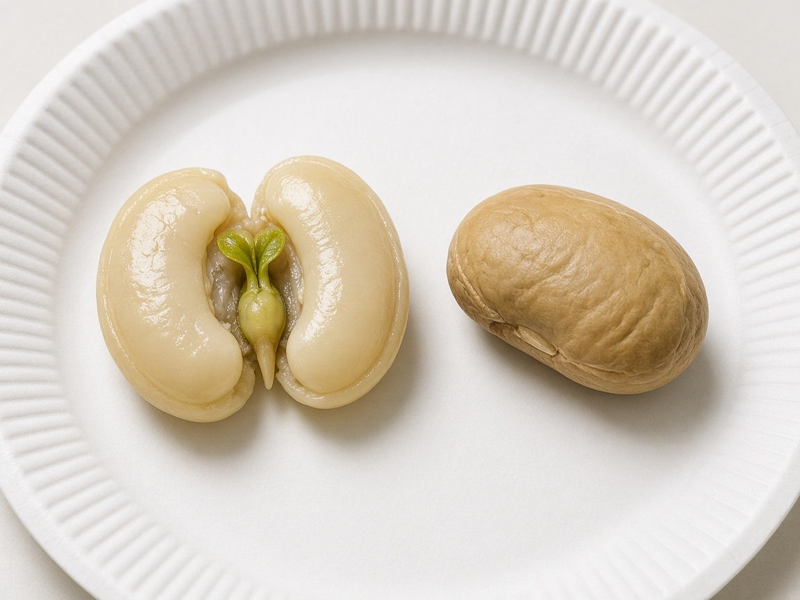
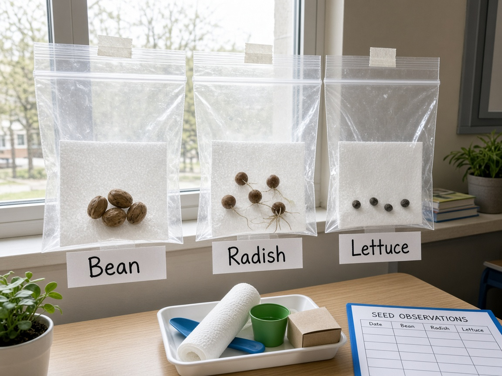
The tiny hook inside the bean is the baby plant. The thick part is its lunch.
Materials
| Item | Qty | Ready how |
|---|
| Soaked lima beans (overnight) | 18 | 9 per group, plus extras |
| Dry lima beans | 9 | For compare |
| Plastic knives or fingers only | — | Split soaked beans; grownup helps |
| Hand lenses | 3 | |
| Journal boxes: coat / baby plant / food | 9 | |
| Watering cans | 3 | For a 4-minute bed check |
30-minute plan
| 0–4 | Dry bean vs soaked bean. Which is ready to wake? |
| 4–16 | Each child splits one soaked bean. Find the tiny plant and the food. Draw it. |
| 16–26 | Outdoor: look for radish cracks in the soil. Water if dry. |
| 26–30 | Wash hands. Compost bean pieces. |
Fun activity
Bean baby reveal. On “1-2-3 open,” everyone opens their soaked bean together. First child to point to the baby plant (not the lunch) gets to show Group B’s teacher cup.
Kid sheet · Inside a seed · copy 9
Print 9. Group B uses a second stack. Clip to the journal after class.
Look at the photo. Color the baby plant green. Color the lunch yellow. Color the coat brown.
Unit 2 · Seeds, worms, water
Week 6 · Worms are helpers
Tue Oct 6, 2026
Question: “How does a worm help a seed?”
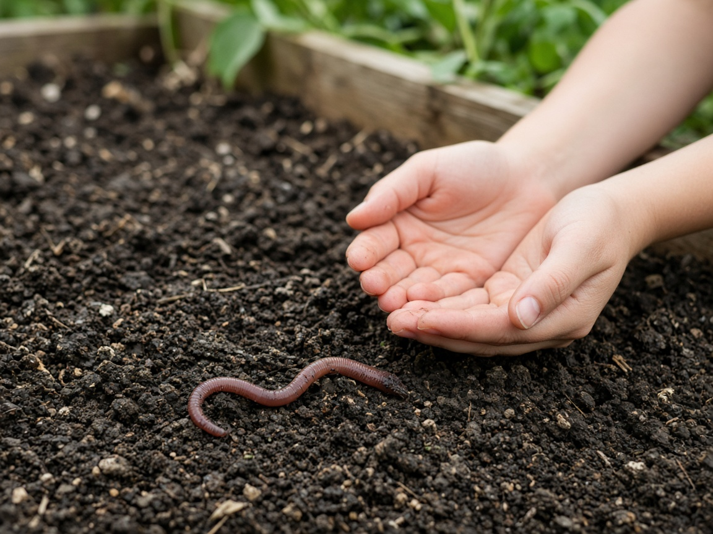
Materials
| Item | Qty | Ready how |
|---|
| Clear cups | 3 | For short looking only |
| Damp paper towels | 3 | Worm rest spots |
| Hand lenses | 3 | |
| Sort cards: helper / hungry / just visiting | 3 | |
30-minute plan
| 0–4 | Rule: kind hands. Open palms, no squeeze. |
| 4–20 | Slow hunt at bed edges. Each trio may look under one clump. Worm goes in a cup for 1 minute, then home to soil. |
| 20–26 | If no worm, look at a picture and a tunnel in the soil. Still count as science. |
| 26–30 | Wipe, wash. “Worms make tiny holes so water and roots can travel.” |
Fun activity
Worm wiggle freeze. 30 seconds: wiggle like a worm. Freeze when you clap. Soft bodies, no one on the soil. Then hunt for a real worm.
Kid sheet · Helper card · copy 9
Print 9. Group B uses a second stack. Clip to the journal after class.
Circle the helpers: worm snail pill bug fly
Draw a worm tunnel. Write: Worms help roots because ________.
Week 7 · Watering scientists
Tue Oct 13, 2026
Question: “How do I know a plant already had enough?”
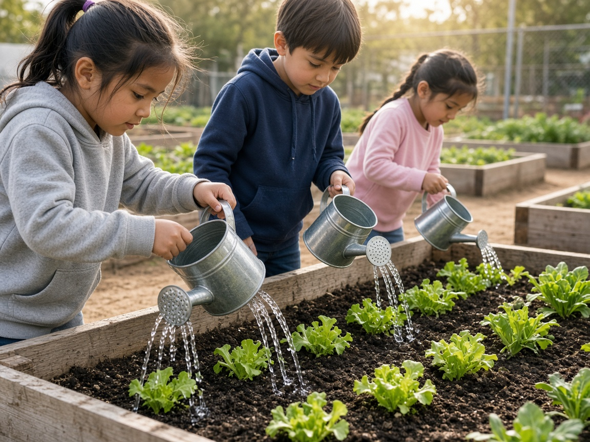
Materials
| Item | Qty | Ready how |
|---|
| Watering cans, half full | 3 | |
| Dry sponge + wet sponge | 1 each | Model “soil like a wrung sponge” |
| Journals | 9 | Count boxes for radish sprouts |
30-minute plan
| 0–5 | Squeeze both sponges. We want damp, not a puddle. |
| 5–12 | Count radish sprouts out loud. Journal the number. |
| 12–24 | Each trio waters one row: 3 slow pours, finger test, stop. |
| 24–30 | Count cans. Wash hands. |
Fun activity
Sponge race. Two sponges: dry vs wrung-out wet. Which one is “enough water”? Trios vote, then water like the wet sponge, not the dripping one.
Kid sheet · Watering scientist · copy 9
Print 9. Group B uses a second stack. Clip to the journal after class.
I counted ____ radish sprouts.
The soil felt: DRY DAMP A PUDDLE
I gave my row ____ slow pours.
Week 8 · Room to grow
Tue Oct 20, 2026
Question: “Why would we pull a baby plant on purpose?”
Materials
| Item | Qty | Ready how |
|---|
| Trowels | 6 | |
| Keep / compost bowls | 2 | |
| Rinse cup | 1 | If tasting a radish green is allowed |
30-minute plan
| 0–6 | Show two radishes touching. “Both stay hungry. One moves.” Grownup pulls the first one. |
| 6–22 | Each trio thins one short stretch. Grownup points to the keeper. Child pulls the extra. Compost extras unless you taste one leaf. |
| 22–28 | Water the keepers. |
| 28–30 | Wash hands. |
Fun activity
Musical rows. Hum a tune. When you stop, each child sits by a plant that is touching a neighbor. That plant is a “needs space” plant. Grownup chooses which extra to pull.
Kid sheet · Keep or compost · copy 9
Print 9. Group B uses a second stack. Clip to the journal after class.
KEEP the strong one
COMPOST the extra
Why we pull one: plants need ____.
Week 9 · A fruit is a seed house
Tue Oct 27, 2026
Question: “Where do the seeds live in this food?”
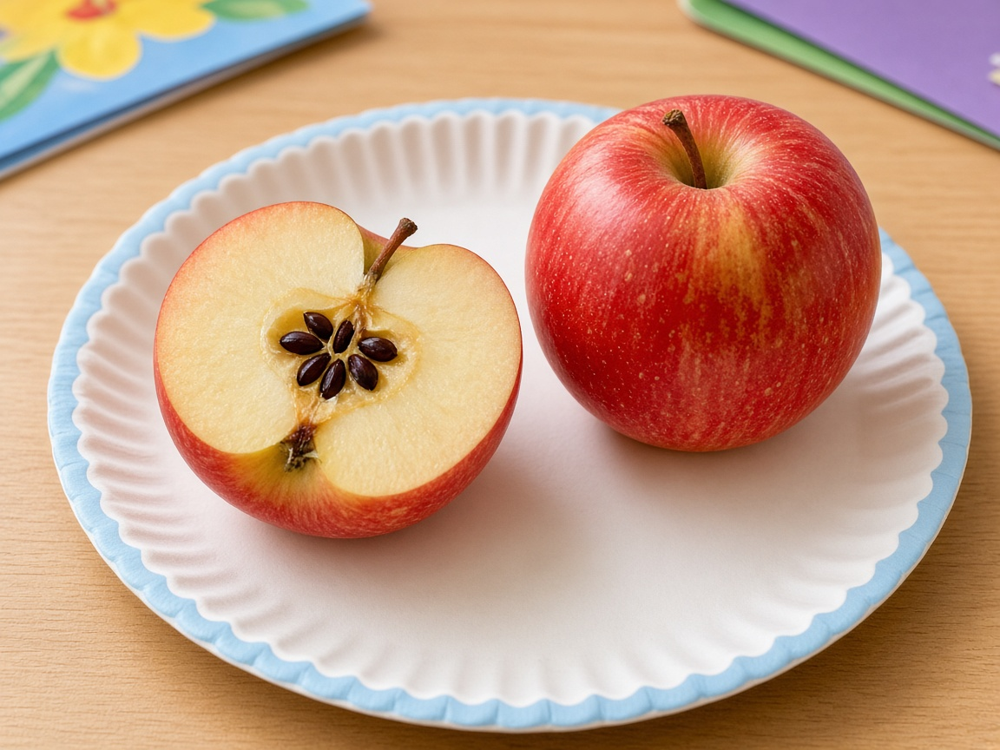
A fruit is a seed house. The apple star is the picture kids remember.
Materials
| Item | Qty | Ready how |
|---|
| Apple, mini pumpkin or pepper, tomato or cucumber | 1 each | Washed; grownup cuts |
| Paper plates | 9 | |
| Journal: seed house drawing | 9 | |
| Compost bucket | 1 | |
30-minute plan
| 0–5 | Hold a closed apple. “A fruit is a plant’s seed house.” |
| 5–20 | Grownup cuts. Each trio gets seeds to look at (not to plant today). Draw the house and the seeds. |
| 20–26 | Quick outdoor water if needed. |
| 26–30 | Wash hands. Compost scraps. Allergy check before any taste. |
Fun activity
Find the star. Grownup cuts the apple last. Kids guess how many seeds before they see. Count together. The star shape is the prize picture.
Kid sheet · Seed house · copy 9
Print 9. Group B uses a second stack. Clip to the journal after class.
Draw the fruit. Put dots for seeds.
My seed house
A fruit is a plant’s ________ house.
Unit 3 · Leaves, garlic, weather
Week 10 · Leaves make food
Tue Nov 3, 2026
Question: “Why do we pick tree leaves off the bed but not the lettuce leaves?”
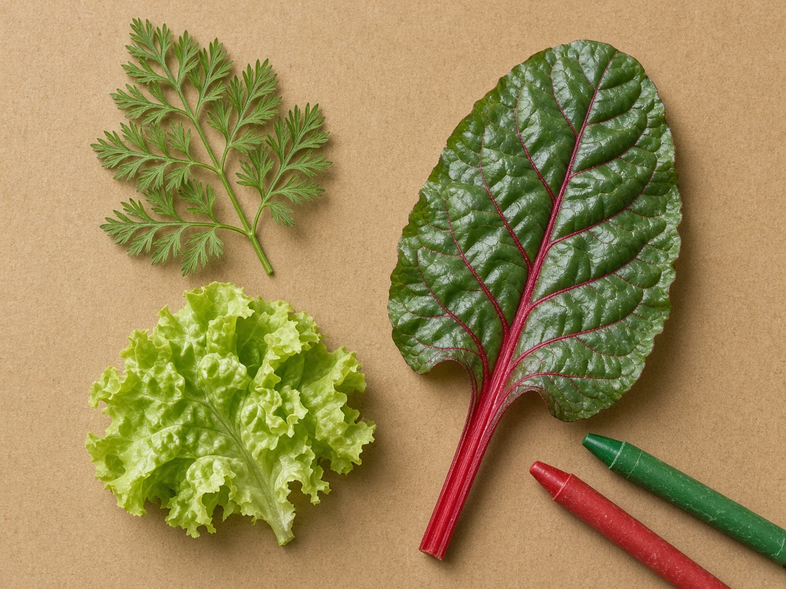
Materials
| Item | Qty | Ready how |
|---|
| Leaf buckets | 2 | |
| Three kinds of garden leaves | 9 total | From extras only |
| Paper + crayons | 9 / 3 tubs | |
30-minute plan
| 0–5 | Sun + green leaf = plant food. Tree leaves on our bed steal the sun. |
| 5–14 | Pick only fallen tree leaves. Do not strip garden plants. |
| 14–26 | Trace two leaf shapes. Label “makes food.” |
| 26–30 | Wash hands. |
Fun activity
Leaf relay. Three leaf types at one end of the path. Trio races (walking) to match a real leaf to the drawing on their sheet. First trio with three matches sits.
Kid sheet · Leaf window · copy 9
Print 9. Group B uses a second stack. Clip to the journal after class.
Leaf A rubbing
Leaf B rubbing
Leaf C rubbing
Leaves make food from ________.
Week 11 · Garlic and peas
Tue Nov 10, 2026
Question: “Which way does a garlic clove sit so it can grow?”
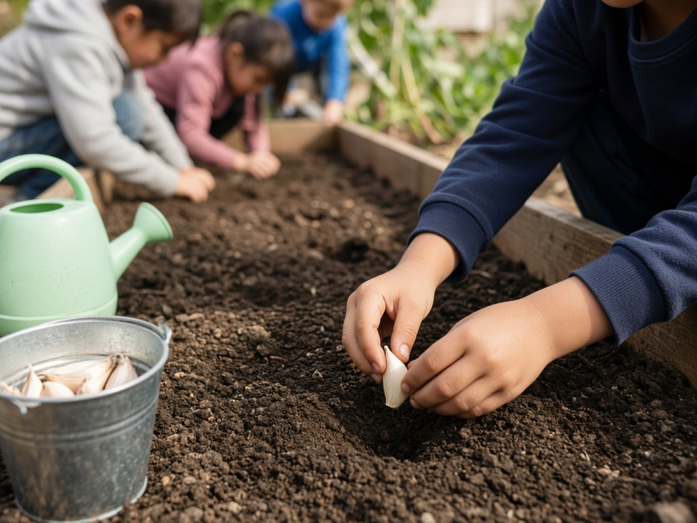
Materials
| Item | Qty | Ready how |
|---|
| Garlic cloves, skin on | 20 | 9 for Group A, 9 for Group B, extras |
| Pea seeds (soaked 2 hours) | 40 | |
| Pre-poked garlic holes | 18 | 2 inches deep, 4 inches apart, along the bed edge |
| Pea furrow + twine trellis | 1 | Against a fence or stakes if you have them |
| Labels + cans | 2 / 3 | |
30-minute plan
| 0–5 | Pointy tip up, flat root plate down. Kids point “up” on their clove. |
| 5–18 | Each child plants one garlic in a ready hole. Trio 3 starts peas: one soaked pea every 2 inches. |
| 18–26 | Switch jobs so every child plants something. Water both. |
| 26–30 | Wash hands. Labels in. |
Fun activity
Pointy-up statues. Hold a clove. When you say “up,” everyone points the tip to the sky and freezes. Wrong-way cloves sit down for one round. Then plant.
Kid sheet · Garlic arrow · copy 9
Print 9. Group B uses a second stack. Clip to the journal after class.
Color the pointy tip. Draw an arrow UP.
Pointy tip = up
Flat plate = down
I also planted a pea: YES / NOT YET
Week 12 · Weather watchers
Tue Nov 17, 2026
Question: “What is the weather doing for our plants this week?”
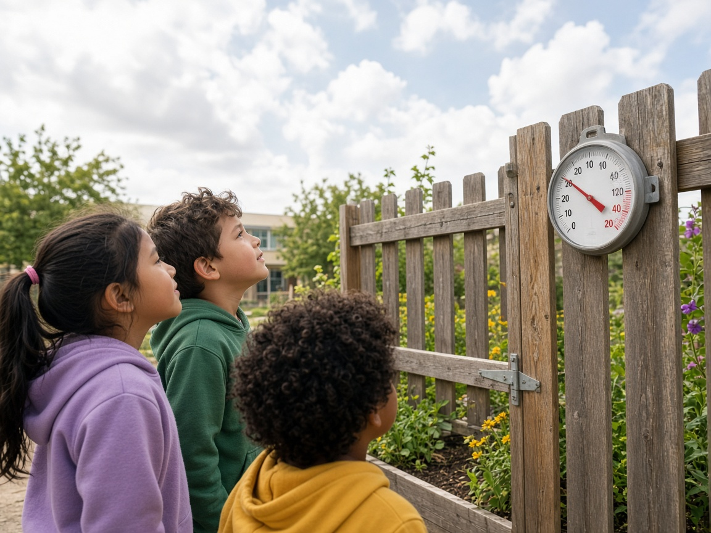
The weather reporter reads the number out loud. The class votes sun, cloud, rain, or wind.
Materials
| Item | Qty | Ready how |
|---|
| Outdoor thermometer | 1 | |
| Weather cards: sun / cloud / rain / wind | 4 | |
| Journal weather box | 9 | Temperature + picture |
| Cans | 3 | Skip if the soil is already wet |
30-minute plan
| 0–6 | Read the number. Vote a weather card. “Plants feel this too.” |
| 6–16 | Finger-test soil. If damp from rain, we do not water. If dry, each trio gets 3 pours. |
| 16–26 | Journal: number, card, “I watered / I did not.” |
| 26–30 | Wash hands. No class next Tuesday (Thanksgiving week). |
Fun activity
Weather reporter. One child gets a wooden spoon “microphone.” They read the thermometer and pick a weather card. The class repeats the report in a big voice.
Kid sheet · Today’s weather · copy 9
Print 9. Group B uses a second stack. Clip to the journal after class.
Number on the thermometer: ____
We watered: YES / NO because the soil was ________.
No class · Thanksgiving week
Tue Nov 24, 2026
Ask one grownup to water Thursday only if there is no rain.
Unit 4 · Roots, harvest, rest
Week 13 · Root windows
Tue Dec 1, 2026
Question: “What do roots do that leaves cannot?”
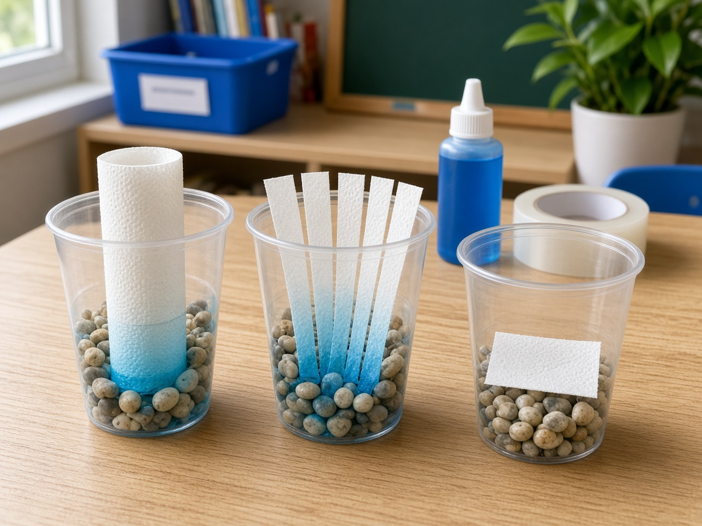
Materials
| Item | Qty | Ready how |
|---|
| Clear cups | 9 | One per child |
| Damp paper towels | 9 | |
| Soaked beans | 18 | 2 per cup |
| Tape | 1 roll | Name on cup |
| Food coloring + pitcher (optional second demo) | 1 | Teacher cup only |
30-minute plan
| 0–5 | Roots drink and hold the plant. Leaves cook food. Different jobs. |
| 5–18 | Roll a towel, tuck 2 beans against the side of the cup so they show, dampen, name tape. Line cups on a classroom tray. |
| 18–26 | Teacher demo: colored water climbing a towel. Outdoor peek at radishes — shoulders showing? |
| 26–30 | Wash hands. Cups stay in the classroom all week. |
Fun activity
Root chant. Call and response: “Roots drink!” (kids) “Leaves cook!” Clap. Two times, then make the cups. The chant comes back when they check cups on Thursday.
Kid sheet · Root window · copy 9
Print 9. Group B uses a second stack. Clip to the journal after class.
Tape this to your cup.
Name: ________
I put ____ beans in. I will look for roots on ________.
Draw what you hope to see
Week 14 · Radish crunch day
Tue Dec 8, 2026
Question: “What did our September seeds become?”
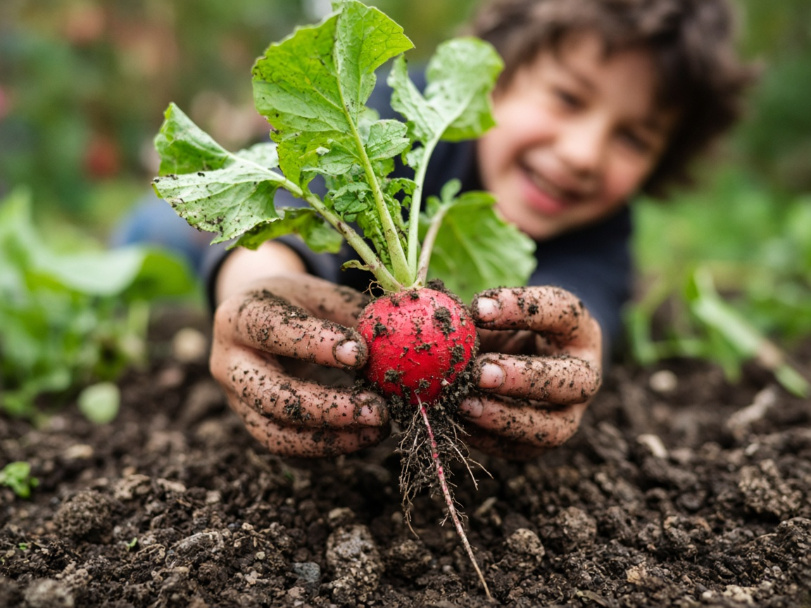
This is the September seed, grown up. One or two radishes per child is enough.
Materials
| Item | Qty | Ready how |
|---|
| Paper bags | 9 | Names on for this group |
| Rinse tub + towels | 1 | |
| Trowels | 6 | |
| Allergy / taste permission | — | If school allows a tiny taste |
30-minute plan
| 0–5 | Hold Map 1 if you have it. “We planted here.” |
| 5–20 | Grownup loosens. Each child pulls 1–2 radishes if they are ready. Leave lettuce. Rinse. Bag. |
| 20–26 | Optional taste. Honest words: spicy, crunchy, surprising. |
| 26–30 | Wash hands. Empty spots get a light water. |
If radishes are tiny, harvest only a few as samples and wait until January. Still celebrate.
Fun activity
Radish parade. Rinse, then walk the path once holding the radish like a torch. Taste faces: spicy / sweet / surprising. No one has to eat it.
Kid sheet · Harvest ticket · copy 9
Print 9. Group B uses a second stack. Clip to the journal after class.
I pulled ____ radish(es).
It tasted: spicy sweet surprising I only looked
Draw your radish
Week 15 · Tucking the garden in
Tue Dec 15, 2026
Question: “How do we say goodbye until January?”
Materials
| Item | Qty | Ready how |
|---|
| Dry leaves or straw | 1 bag | Light mulch only |
| Census clipboard | 1 | Garlic, peas, lettuce still in |
| Journals | 9 | “Garden in December” |
30-minute plan
| 0–8 | Count what stays. Write numbers. |
| 8–18 | Tuck mulch around garlic and bare soil. Keep lettuce crowns open. |
| 18–26 | Draw December. Wave to the bed. |
| 26–30 | Wash hands. Next garden Tuesday is January 5. |
Fun activity
Goodnight garden. Whisper a one-line lullaby together: “Sleep well, garlic. Sleep well, peas.” Wave. First graders remember the goodbye more than the mulch.
Kid sheet · December postcard · copy 9
Print 9. Group B uses a second stack. Clip to the journal after class.
Still in our bed: garlic / peas / lettuce / other
Garden in December
See you on January 5.
No class · Winter recess
Tue Dec 22, 2026
Unit 5 · Winter scientists
Week 16 · Winter is alive
Tue Jan 5, 2027
Question: “What lived through the quiet weeks?”
Materials
| Item | Qty | Ready how |
|---|
| December census | 1 | On the board |
| Journals | 9 | |
| Trowels + weed bucket | 6 / 1 | |
30-minute plan
| 0–8 | Welcome back. Tour garlic, peas, lettuce. Compare counts. |
| 8–20 | Pull only clear weeds. Do not yank yellow lettuce without asking. |
| 20–26 | Journal one “still alive” picture. |
| 26–30 | Wash hands. Water only if dry. |
Fun activity
Alive museum. Trios freeze next to something alive and something that is not (a rock, a stick). You tour like a museum guide. Whisper voices.
Kid sheet · Still alive hunt · copy 9
Print 9. Group B uses a second stack. Clip to the journal after class.
Alive I found
Not alive I found
December number ____ January number ____
Week 17 · Smell garden
Tue Jan 12, 2027
Question: “Can a leaf tell a story with smell?”
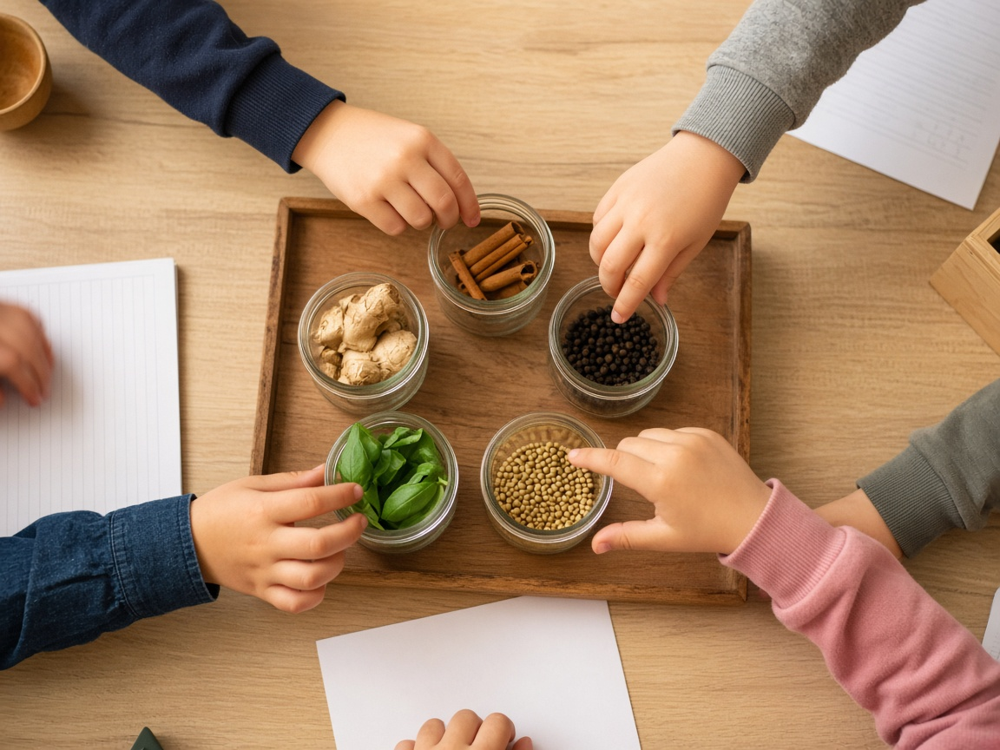
Materials
| Item | Qty | Ready how |
|---|
| Mint, rosemary, chives or green onion, basil (or dried) | 4 kinds | In 4 cups |
| Blindfold optional | 1 | Only if kids want it |
| Herb starts to plant if you have them | 3–6 | Mint in a pot — it spreads |
| Recording sheet: 4 smells | 9 | |
30-minute plan
| 0–4 | Rub a mint leaf. “The smell is the plant talking.” |
| 4–16 | Four smell stations, 3 minutes. Guess, then name. |
| 16–26 | Plant mint in a pot and chives at the bed edge, or just water if you have no starts. |
| 26–30 | Wash hands. No rubbing eyes. |
Fun activity
Smell detectives. Eyes closed optional. Pass mint, then rosemary. If they guess mint, they may plant the mint pot. Wrong guess still smells again — no losing.
Kid sheet · Smell match · copy 9
Print 9. Group B uses a second stack. Clip to the journal after class.
My favorite smell: ________
Week 18 · How seeds travel
Tue Jan 19, 2027
Question: “How did this seed move without legs?”
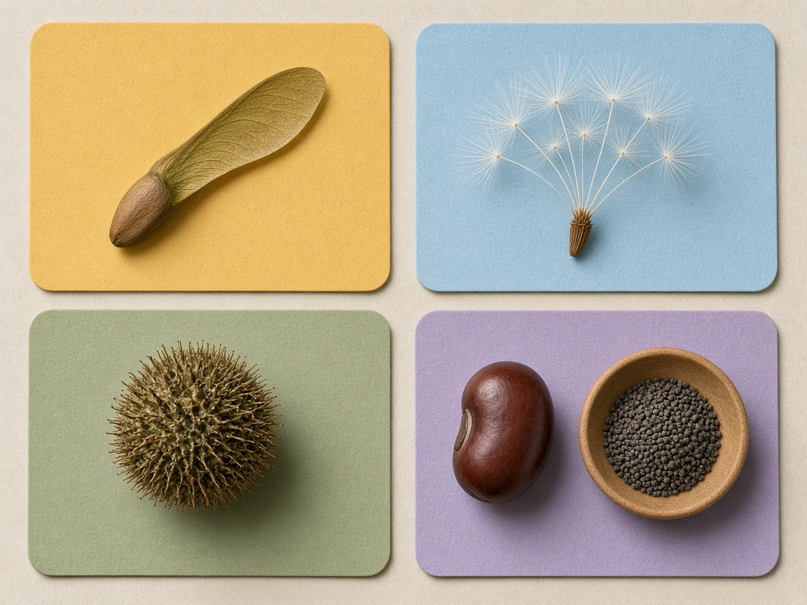
Print the four travel mats below. Kids sort real seeds onto them.
Materials
| Item | Qty | Ready how |
|---|
| Travel set: maple or any wing, burr or Velcro demo, dandelion or cottony seed, heavy bean, tiny lettuce | 1 tray | |
| Fan or just blow | 1 | |
| Sort mats: wind / stick / animal / plant-and-drop | 4 | |
30-minute plan
| 0–6 | Drop a bean and blow a fluffy seed. Different travelers. |
| 6–20 | Trios sort the tray onto the four mats. Try the fan. |
| 20–26 | Outdoor: look for last year’s dry seed heads if any. |
| 26–30 | Wash hands. |
Fun activity
Seed Olympics. Four events on the path: blow the fluff, drop the bean, stick the burr on a sweater, toss the wing. Cheer quietly. Then sort the tray.
Kid sheet · Travel mats · copy 1 set and cut
Print 9. Group B uses a second stack. Clip to the journal after class.
WIND flies
STICK on fur
DROP down
RIDE with animals
A seed has no legs. It travels by ________.
Week 19 · Spring trays
Tue Jan 26, 2027
Question: “What we tuck in a tray today can go outside in March.”
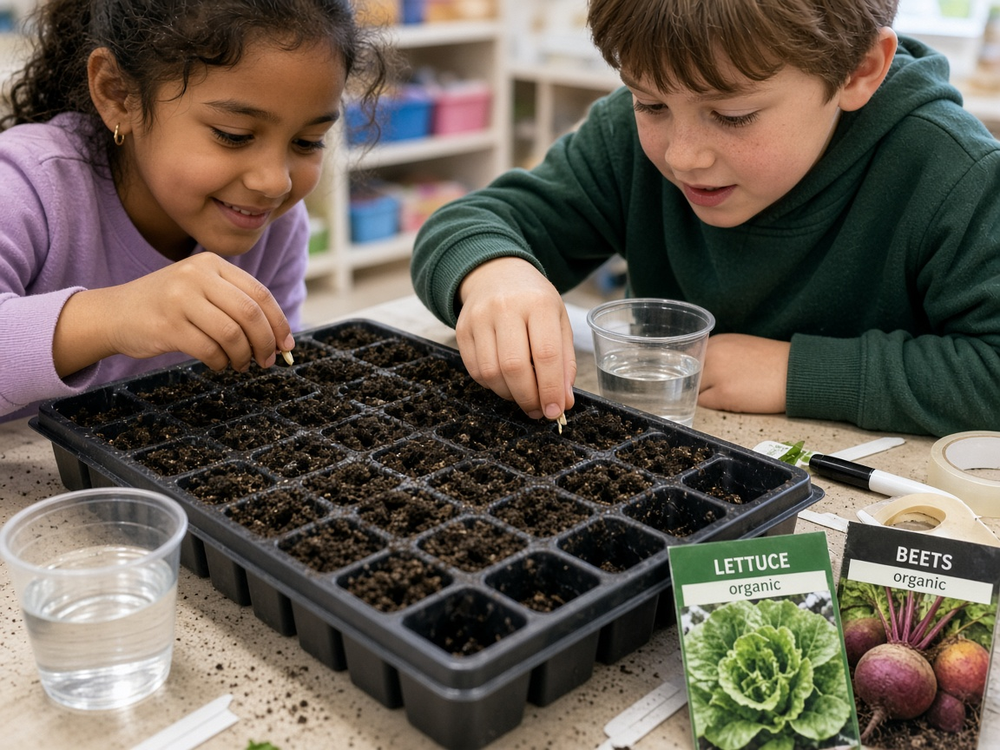
Materials
| Item | Qty | Ready how |
|---|
| 6-well trays | 3 | One per trio; Group B uses 3 more or the same washed later — better to have 6 trays total |
| Pre-damp seed mix | 1 tub | Clumps, not dust |
| Sunflower, bush bean, cherry tomato seed | 1 packet each | Sunflower and bean are big enough for Grade 1 |
| Cups of water | 9 | |
| Tape + marker | 1 | Grownup labels |
30-minute plan
| 0–5 | Demo one well: soil, one seed, cover twice as deep as the seed is tall, sip of water. |
| 5–22 | Each trio fills one tray: 2 sunflower, 2 bean, 2 tomato. Grownup labels. |
| 22–28 | Place trays in the brightest classroom window. Assign a weekday waterer. |
| 28–30 | Wash hands. |
Fun activity
One seed, one well song. To the tune of “This Old Man”: “One seed here, one seed there, every well gets one, that’s fair.” Sing once, then fill trays.
Kid sheet · Tray ticket · copy 9
Print 9. Group B uses a second stack. Clip to the journal after class.
My trio planted: sunflower ____ bean ____ tomato ____
A seed needs: water light space (circle all)
Our tray name
Unit 6 · Spring start
Week 20 · Compost cooks
Tue Feb 2, 2027
Question: “What leftovers can become soil food?”
Materials
| Item | Qty | Ready how |
|---|
| Yes pile: dry leaves, small twigs, vegetable peels if allowed | 1 tray | |
| No pile picture cards: meat, plastic, oily food | 3 | |
| Finished compost | 1 tub | |
| Trowels | 9 | |
30-minute plan
| 0–8 | Sort yes/no. Compost is a slow kitchen for plants. |
| 8–22 | Spread a thin layer on tired empty soil, not on lettuce hearts. |
| 22–26 | Check trays. Water if the surface is pale and dry. |
| 26–30 | Wash hands. |
Fun activity
Compost kitchen. You are chefs. Hold up a leaf: “In the pot!” Hold up a plastic picture: “Not in the pot!” Kids shout. Then cook a thin compost layer on tired soil.
Kid sheet · Yes or no · copy 9
Print 9. Group B uses a second stack. Clip to the journal after class.
YES leaves, peels, twigs
NO plastic, meat, oily food
Compost is food for the ________.
Week 21 · Peas and sunshine flowers
Tue Feb 9, 2027
Question: “What can go in the ground while the air is still cool?”
Materials
| Item | Qty | Ready how |
|---|
| Soaked peas | 30 | |
| Calendula or nasturtium seed | 1 packet | Easy flowers for bees later |
| Labels + cans | 2 / 3 | |
30-minute plan
| 0–5 | Peas like cool weather. Sunflowers still wait in the tray. |
| 5–22 | Trio 1–2 sow peas along the trellis. Trio 3 sows calendula at a sunny corner. Switch once. |
| 22–28 | Water. Labels. |
| 28–30 | Wash hands. No class next Tuesday (mid-year recess). |
Fun activity
Pea train. Kids line up on the path. The first places a pea, the next places one a finger later, like train cars. Calendula trio plants the “station” at the corner.
Kid sheet · Cool-weather planters · copy 9
Print 9. Group B uses a second stack. Clip to the journal after class.
I planted: peas calendula both
Peas like cool air. Sunflowers still wait in the tray. TRUE / FALSE
No class · Mid-year recess
Tue Feb 16, 2027
Assign tray watering over the break.
Week 22 · What’s in a jar of soil?
Tue Feb 23, 2027
Question: “If I shake soil with water, what layers appear?”
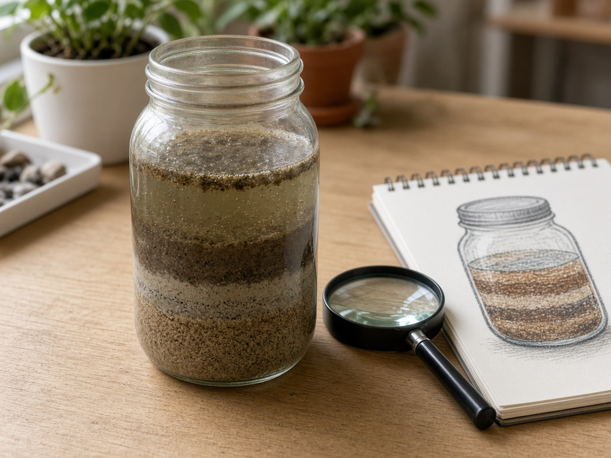
Materials
| Item | Qty | Ready how |
|---|
| Jars with lids | 3 | One per trio |
| Soil scoops from the path edge | 3 | Not from on top of plants |
| Water | 1 pitcher | |
| Journal layer boxes | 9 | |
30-minute plan
| 0–8 | 1/3 soil, 2/3 water, shake, set down. Do not touch. |
| 8–16 | While jars settle: tray check, pinch off weak extras. |
| 16–26 | Draw sand (bottom), muddy water, floaty bits. “Roots drink from this mix.” |
| 26–30 | Wash hands. Leave jars until Thursday. |
Fun activity
Shake-and-wait dance. Shake the jar 10 times while counting. Then sit on hands for 2 minutes (the hard part). No poking the jar. Watch layers appear.
Kid sheet · Jar layers · copy 9
Print 9. Group B uses a second stack. Clip to the journal after class.
Bottom sand
Muddy water
Floaty bits
Draw your jar.
Week 23 · Transplant day
Tue Mar 2, 2027
Question: “How do I move a plant without breaking its roots?”
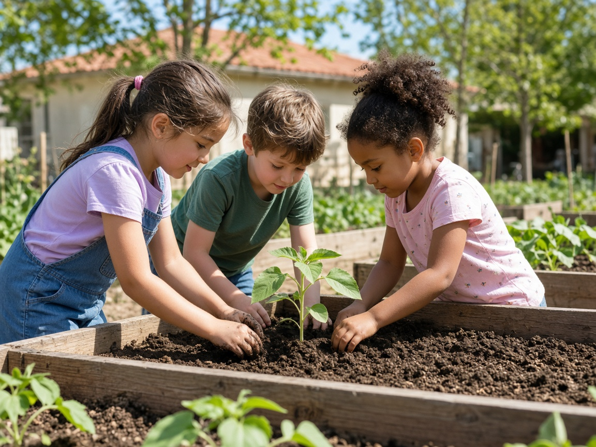
Materials
| Item | Qty | Ready how |
|---|
| Sturdiest tray plants | 9+ | Water trays an hour before |
| Trowels | 6 | |
| Cans | 3 | |
| Pre-dug holes | 9 per group if you have that many strong plants; otherwise share | |
30-minute plan
| 0–5 | Squeeze the tray, pop, support the root ball, never yank the stem. |
| 5–22 | Each child (or pair) plants one start: hole, in, pinch, drink. Tomatoes wait if nights are still cold — beans and sunflowers can go if they have 2–3 true leaves. |
| 22–28 | Water every new plant. Weak leftovers stay in trays. |
| 28–30 | Wash hands. |
Fun activity
Slow-motion seedling. Each pair carries a start from tray to hole as if the plant were an egg. If someone jiggles, freeze and reset. Gentle is the game.
Kid sheet · Gentle hands · copy 9
Print 9. Group B uses a second stack. Clip to the journal after class.
Steps: squeeze tray → pop → hold the soil (not the stem) → hole → pinch → drink.
I planted a ________.
I held the: STEM ROOT BALL
Week 24 · Flowers and bees
Tue Mar 9, 2027
Question: “Why does a flower bother to be pretty?”
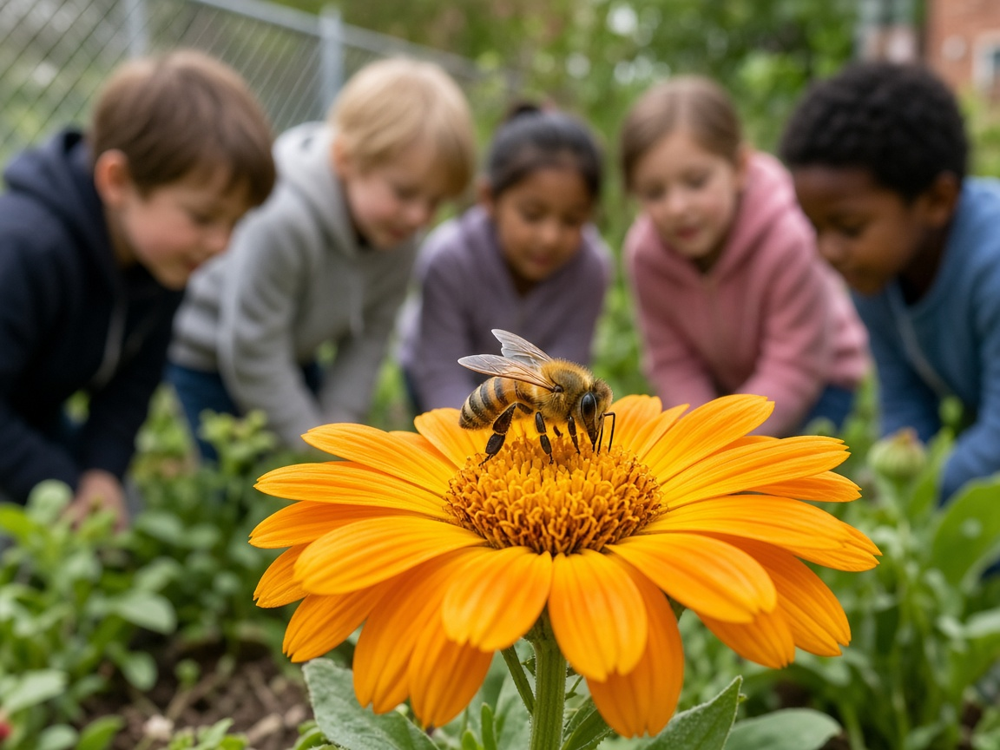
Materials
| Item | Qty | Ready how |
|---|
| One open flower (calendula, mustard, or store daisy) | 3 | |
| Hand lenses | 3 | |
| Bee rule card | 1 | “We watch. We do not swipe.” |
| Journal flower | 9 | Petal, middle, visitor |
30-minute plan
| 0–6 | Flower invites a bee. Bee moves pollen. Fruit can come later. |
| 6–16 | Look at flower parts with lenses. Draw. |
| 16–26 | Quiet watch at the calendula. If no bee, still look. No chasing. |
| 26–30 | Wash hands. |
Fun activity
Bee buzz freeze. Buzz around the path. When you raise a yellow card, freeze like a bee on a flower. Then sit and watch real flowers. No swiping.
Kid sheet · Bee watch · copy 9
Print 9. Group B uses a second stack. Clip to the journal after class.
A flower is pretty so a ________ will visit.
We watch. We do not swipe. Copy that rule.
Week 25 · Measure us
Tue Mar 16, 2027
Question: “Which plant grew the most since transplant day?”
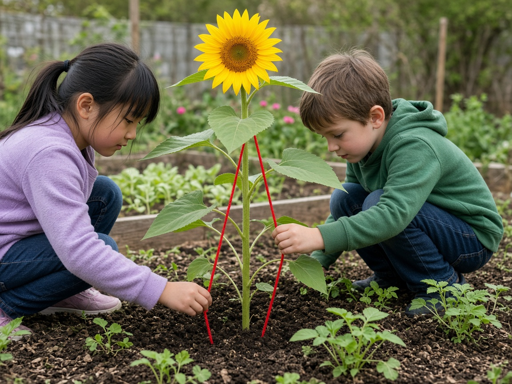
Yarn is easier than a ruler. How many yarns tall?
Materials
| Item | Qty | Ready how |
|---|
| Rulers or yarn + clips | 3 | Yarn is easier for Grade 1 |
| Data sheet: plant name / how many yarns tall | 1 per trio | |
| Cans | 3 | |
30-minute plan
| 0–5 | Demo measuring a sunflower from soil to top leaf. |
| 5–20 | Each trio measures 2 plants and records. No snapping stems. |
| 20–26 | Water. Mark the tallest with a loose ribbon. |
| 26–30 | Wash hands. Save the sheet for May. |
Fun activity
Tallest sunflower contest. Trios measure with yarn. Crown the tallest with a loose ribbon. Losing plants still get a cheer: “You’re growing too!”
Kid sheet · Measure chart · copy 3 (one per trio)
Print 9. Group B uses a second stack. Clip to the journal after class.
Plant 1: ____ yarns Plant 2: ____ yarns
Tallest today: ________
Save this paper for May.
Week 26 · Beans in the ground
Tue Mar 23, 2027
Question: “Why can beans go outside now when they could not in January?”
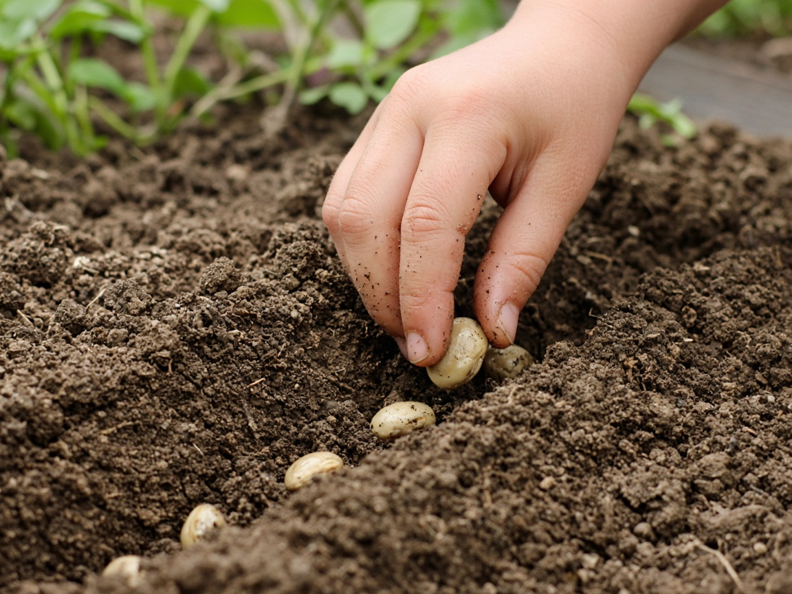
Two beans, one inch, a hand-width apart. Group B plants the next stretch.
Materials
| Item | Qty | Ready how |
|---|
| Soaked bush beans | 30 | |
| Thermometer | 1 | Compare to January memory |
| Labels + cans | 1 / 3 | |
30-minute plan
| 0–5 | Read today’s air. “The soil is waking. Beans like this better.” |
| 5–22 | Each child plants 2 beans, 1 inch deep, a hand-width apart. Group B fills the next stretch. |
| 22–28 | Water. Label. |
| 28–30 | Wash hands. |
Fun activity
Bean hop. After planting two beans, hop (on the path) to the next empty spot. Makes spacing visible. No hopping in the bed.
Kid sheet · Bean math · copy 9
Print 9. Group B uses a second stack. Clip to the journal after class.
I planted 2 beans. Group A plants ____ beans. Group B plants ____ beans.
Why now, not January? The soil is ________.
Week 27 · Names for our plants
Tue Mar 30, 2027
Question: “How do we tell other children this bed is loved?”
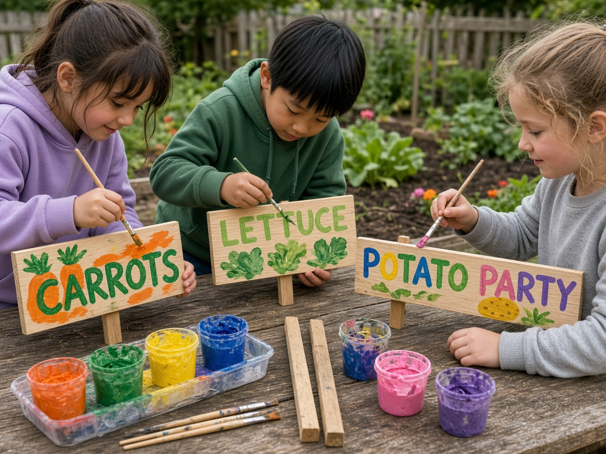
Materials
| Item | Qty | Ready how |
|---|
| Wood stakes or card + sticks | 9 | Names penciled: peas, lettuce, beans, sunflowers, herbs |
| Paint + brushes + water cups | 4 colors | Tablecloth |
| Class sign “Room 17 garden” | 1 | Everyone adds a fingerprint or name on the back |
30-minute plan
| 0–4 | Rule: walk around. Signs are our polite voice. |
| 4–22 | Paint. Group A does crop stakes. Group B paints the class sign plus leftovers. |
| 22–28 | Stand dry-enough signs. Others dry inside. |
| 28–30 | Wash hands and brushes. |
Fun activity
Sign studio. Put on imaginary berets. Each child is an artist with one color at a time. Gallery walk at minute 22: whisper one kind word about someone else’s sign.
Kid sheet · Sign sketch · copy 9
Print 9. Group B uses a second stack. Clip to the journal after class.
Practice the word you will paint
Our class sign says: Room 17 garden
Unit 7 · Grow and share
Week 28 · Spring tasting
Tue Apr 6, 2027
Question: “What is ready that the plant can spare?”
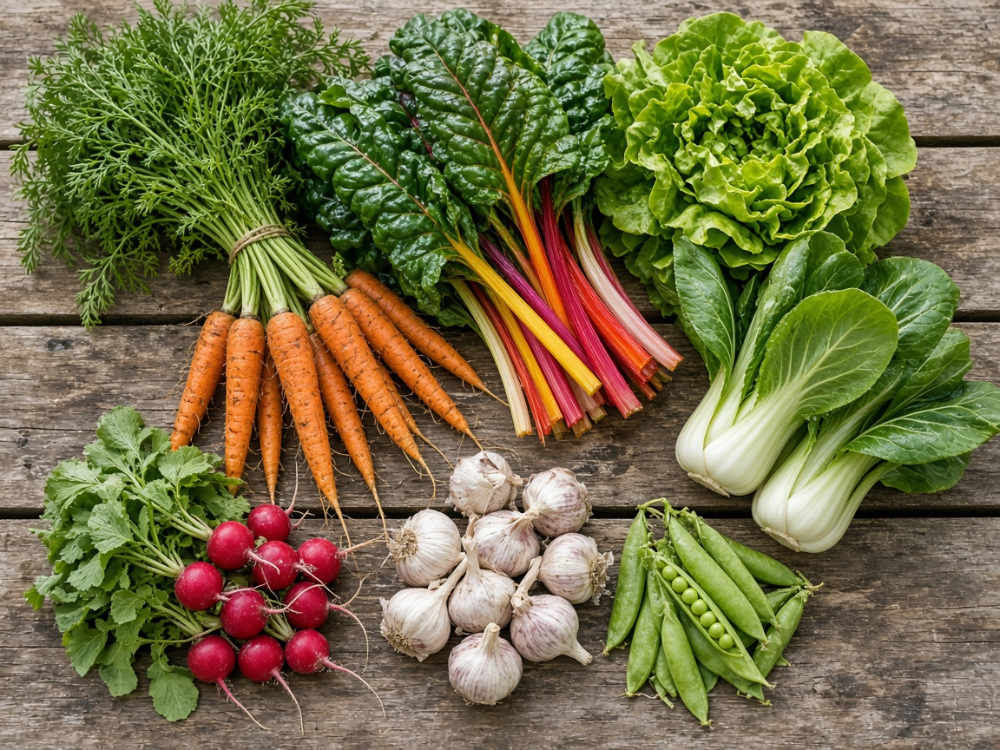
Materials
| Item | Qty | Ready how |
|---|
| Rinse tub + bags | 1 / 9 | |
| Scissors | 1 | Grownup cuts lettuce leaves, pea shoots |
| Taste permission | — | |
30-minute plan
| 0–5 | We pick extras, not the whole plant, unless it is a radish. |
| 5–20 | Grownup harvests. Children rinse and bag a tiny share. |
| 20–26 | Taste words. Water what remains. |
| 26–30 | Wash hands. Recess next week — Tuesday water plan on the board. |
Fun activity
Room 17 cafe. Rinse a leaf. You are the waiter: “Today’s special is pea.” Kids may taste or only smell. Write a menu word: crunchy, sweet, green.
Kid sheet · Cafe menu · copy 9
Print 9. Group B uses a second stack. Clip to the journal after class.
Today’s special: ________
I tasted / I smelled / I only looked
Word: crunchy sweet green spicy
No class · Spring recess
Tue Apr 13, 2027
Two family waterers if it does not rain. Beans and sunflowers should not dry out.
Week 29 · Color climbers
Tue Apr 20, 2027
Question: “How does water travel up a stem?”
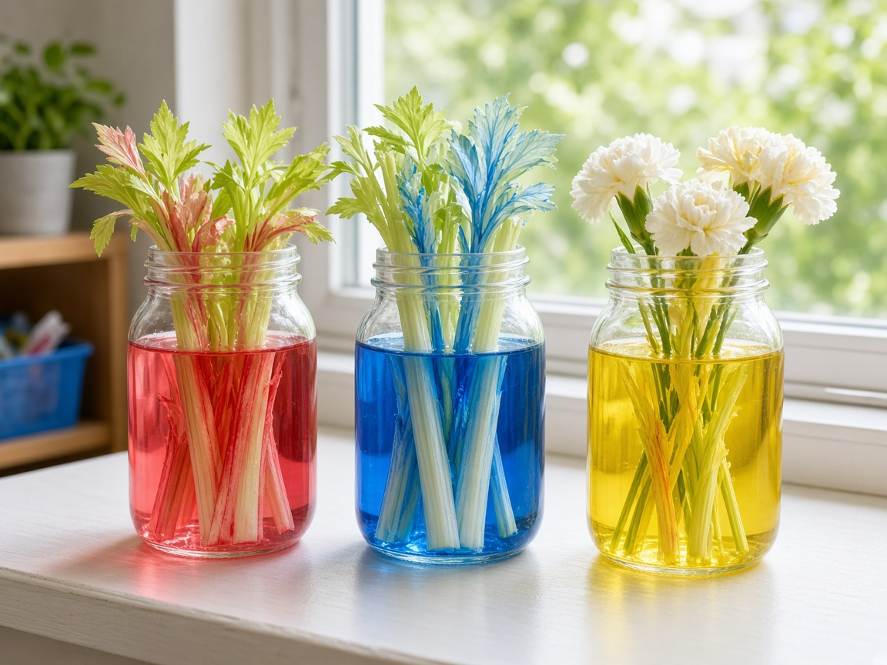
Materials
| Item | Qty | Ready how |
|---|
| Pale celery or white flowers | 3 | One per trio |
| Jars + dark food coloring | 3 | Set as early as you can |
| Cans | 3 | Deep water the bed after |
30-minute plan
| 0–6 | Stems in color. Predict. |
| 6–18 | Outdoor care: water beans and sunflowers. Pull weeds around them. |
| 18–26 | Look at color in the veins. Draw. |
| 26–30 | Wash hands. Leave jars for the classroom to see tomorrow. |
Fun activity
Color race. Three jars, three colors. Bet which stem changes first. Check at the end. Outdoor watering is the “halftime show.”
Kid sheet · Water path · copy 9
Print 9. Group B uses a second stack. Clip to the journal after class.
I think the ________ jar will win.
Water travels up the ________.
Draw the color in the veins
Week 30 · Care crew
Tue Apr 27, 2027
Question: “What does our garden need most today?”
Materials
| Item | Qty | Ready how |
|---|
| Need cards: water / weed / tie-up / leave-it | 4 | |
| Soft ties for tall sunflowers | 6 | |
| Trowels + cans | 6 / 3 | |
30-minute plan
| 0–6 | Vote the need card after a look. |
| 6–24 | Do that job only. If “tie-up,” grownup holds the stake. |
| 24–30 | Count tools. Wash hands. |
Fun activity
Superhero missions. Need cards are missions: Water-Woman, Weed-Man, Tie-up Team, Leave-It League. Vote one mission. Capes are optional and imaginary.
Kid sheet · Mission card · copy 9
Print 9. Group B uses a second stack. Clip to the journal after class.
Our mission today: ________
Week 31 · Harvest baskets
Tue May 4, 2027
Question: “What is fair to take so the plant can keep growing?”
Materials
| Item | Qty | Ready how |
|---|
| Bags or small baskets | 9 | |
| Rinse station | 1 | |
| Camera | 1 | Photo before picking |
30-minute plan
| 0–4 | Photo first. |
| 4–22 | Peas, lettuce leaves, herbs, any ready beans. Grownup cuts. Everyone gets something, even one leaf. |
| 22–28 | Journal “I am taking ___.” |
| 28–30 | Wash hands. |
Fun activity
Gentle basket relay. Walk (not run) a bag to the rinse tub and back. If a leaf drops, pick it up and keep going. Everyone still gets something in the bag.
Kid sheet · Fair share · copy 9
Print 9. Group B uses a second stack. Clip to the journal after class.
I am taking ________.
A plant can spare this because ________.
Week 32 · Sharing day
Tue May 11, 2027
Question: “Who else can enjoy what we grew?”
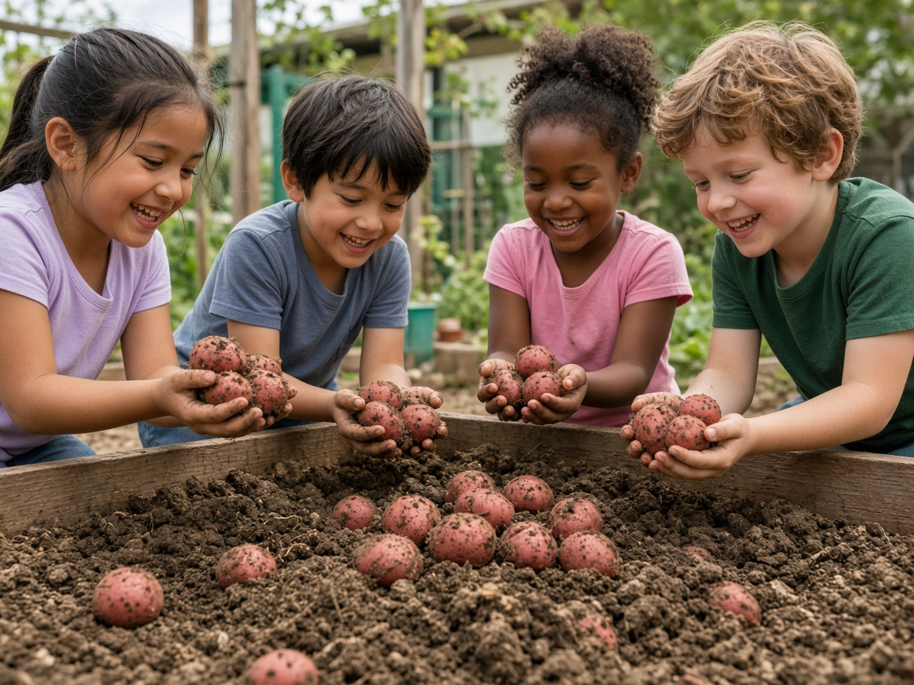
Materials
| Item | Qty | Ready how |
|---|
| Two share boxes | 2 | Classroom / office or family, if school allows |
| Note cards from kids | 9 | “From Room 17 garden” |
| Rinse tub | 1 | |
30-minute plan
| 0–5 | We keep some, we give some. |
| 5–20 | Harvest a sharing bunch. Rinse. Kids decorate the note. |
| 20–26 | Walk the box to its place if time, or the teacher delivers later. |
| 26–30 | Wash hands. |
Fun activity
Delivery parade. Two children carry the share box. The rest walk behind as the band (quiet humming). Deliver to the classroom or office if allowed.
Kid sheet · Gift note · copy 9
Print 9. Group B uses a second stack. Clip to the journal after class.
From Room 17 garden
Dear friend, we grew this for you.
Love, ________
Week 33 · Save a seed
Tue May 18, 2027
Question: “How can this plant start next year’s class?”
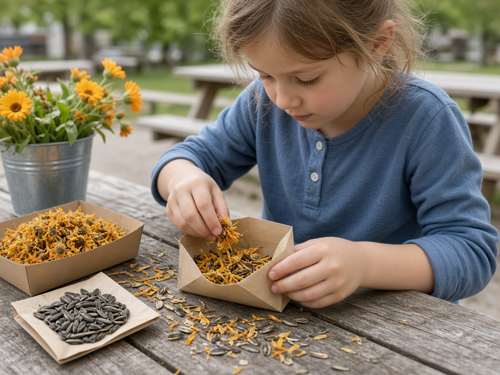
A seed is a suitcase. Write the plant name. Keep the tin for next August.
Materials
| Item | Qty | Ready how |
|---|
| Envelopes | 9 | Child writes the plant name |
| Dry calendula, pea, or lettuce seed if plants have gone to seed | as available | If nothing is dry, save a sunflower head to dry in the classroom |
| March measure sheet | 1 | Compare height if sunflowers remain |
30-minute plan
| 0–6 | A seed is a suitcase for a baby plant. We already opened one in September. |
| 6–20 | Rub dry seed into envelopes, or cut a sunflower head to dry. |
| 20–26 | Measure the tallest plant again if it is still standing. |
| 26–30 | Wash hands. Envelopes in a tin for next August. |
Fun activity
Pack the suitcase. Pretend the envelope is a suitcase. “Coat? Lunch? Baby plant?” Kids pack a seed and write the name. Lost-luggage voices welcome.
Kid sheet · Seed suitcase · copy 9
Print 9. Group B uses a second stack. Clip to the journal after class.
Plant name: ________
Inside this seed: a baby plant and its lunch. TRUE / FALSE
Keep in the tin until next August.
Week 34 · We grew too
Tue May 25, 2027
Question: “What can I do now that I could not do in September?”
Materials
| Item | Qty | Ready how |
|---|
| Map 1 from September | 18 | Pass back the matching child’s map |
| Blank Map 2 | 9 per group | |
| “I used to / Now I” paper | 9 | |
| Rake or leftover seed for empty soil | 1 | Leave the bed tidy, not empty of perennials/herbs |
30-minute plan
| 0–6 | Hold Map 1. Walk the real bed. Notice new plants. |
| 6–16 | Draw Map 2. Write or dictate “I used to… Now I…” |
| 16–24 | Tidy paths. Thank the bed out loud. |
| 24–30 | Wash hands. Last day of school is June 4 — only harvest again if something is truly ready. |
Fun activity
Then-and-now reveal. Hold Map 1 to your chest. On 3, flip to Map 2. Partners notice one new thing. End with “Thank you, garden” in a whisper.
Kid sheet · I used to / Now I · copy 9
Print 9. Group B uses a second stack. Clip to the journal after class.
Tape next to Map 1 and Map 2.
Planting at a glance
| When | What | Why for Grade 1 |
|---|
| Sept 22 | Radish + lettuce | Radish is a four-week crunch. Lettuce stays for winter salads. |
| Nov 10 | Garlic + peas | Cloves are big enough for small fingers. Peas climb and flower. |
| Jan 26 | Sunflower, bean, tomato trays | Big seeds. Tomatoes stay indoors longer. |
| Feb 9 | More peas + calendula | Cool-season flowers for bees. |
| Mar 2–23 | Transplant; beans in ground | Soil has warmed. Kids see tray-to-bed. |
| May | Harvest, share, save seed | The year has a closing, not just more chores. |
If the week goes sideways
- Only one grownup: skip trios. Whole group of 9 does the table job, then 6 minutes at the bed with trowels put away.
- Rain: do the journal / smell / seed-split / jar / color-climber version first. Plant the next dry Tuesday.
- Nothing came up: still count, still draw “bare soil,” plant again. The science is the noticing.
- Group B starts late: drop the look step. Keep the do step.
Quantities are for one group of 9 in Room 17. Run the lesson twice each Tuesday. CUSD dates: no class Nov 24, Dec 22, Feb 16, Apr 13.